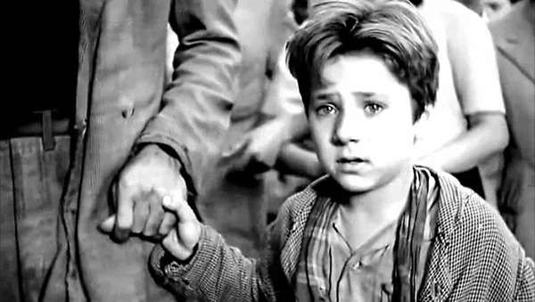
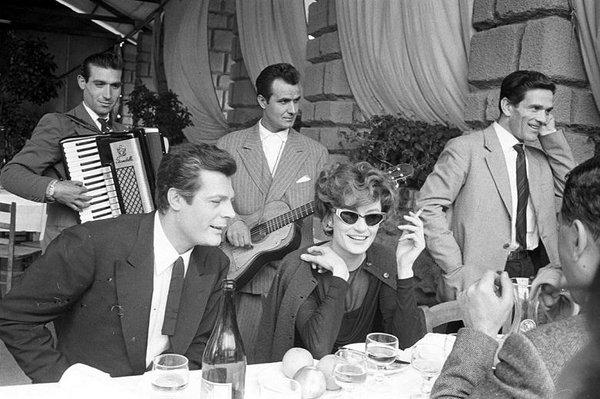

Cine y Lingüística
La Influencia del Italiano Estándar en el Cine Italiano
La elección del italiano estándar en el cine italiano ha jugado un papel crucial en la difusión y comprensión global de la cultura italiana. Al adoptar esta variante lingüística, los cineastas italianos no solo promovieron el italiano estándar dentro del país, sino que también facilitaron su accesibilidad para audiencias internacionales. Esto permitió que las películas italianas fueran comprendidas por un público global más amplio, contribuyendo significativamente a la exportación y a la difusión de la cultura italiana en todo el mundo.
Además, el predominio del italiano estándar en el cine estuvo estrechamente vinculado a la construcción de una identidad nacional cohesiva. Al presentar el italiano estándar en sus películas, los cineastas reforzaron la idea de una identidad nacional compartida, proporcionando una representación cultural coherente que trascendía las diferencias regionales. Esta representación unificada no solo fortaleció la cohesión social y cultural dentro de Italia, sino que también mejoró la percepción positiva de la cultura italiana en el extranjero.
Durante el régimen de Mussolini, la política lingüística de "la pureza del italiano" se reflejaba en la preferencia por el uso del italiano estándar en el cine. Esta política no solo promovía el italiano estándar en el ámbito cinematográfico, sino que también brindaba una oportunidad invaluable para que personas que hablaban dialectos regionales aprendieran y adoptaran el italiano estándar.
Las películas y programas de televisión ofrecían una exposición constante al italiano estándar, permitiendo que los hablantes de dialectos regionales se familiarizaran con el idioma de manera natural a través de la observación y la imitación de los actores. Además, el contexto cultural y social presentado en estos medios ayudaba a las personas a comprender el uso del italiano estándar en diversas situaciones sociales. La popularidad y accesibilidad del cine y la televisión aseguraron que una amplia gama de personas, incluidas aquellas sin acceso a la educación formal, tuvieran la oportunidad de aprender italiano estándar de manera informal pero efectiva.